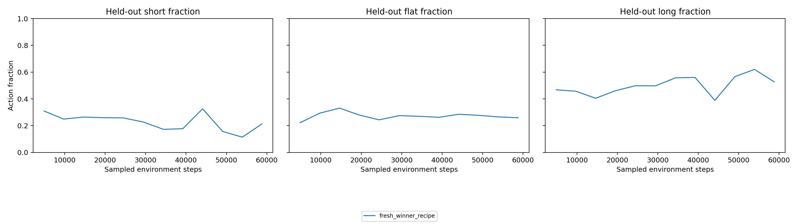
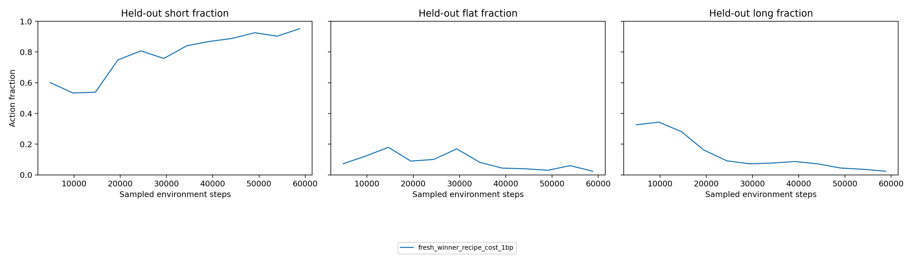
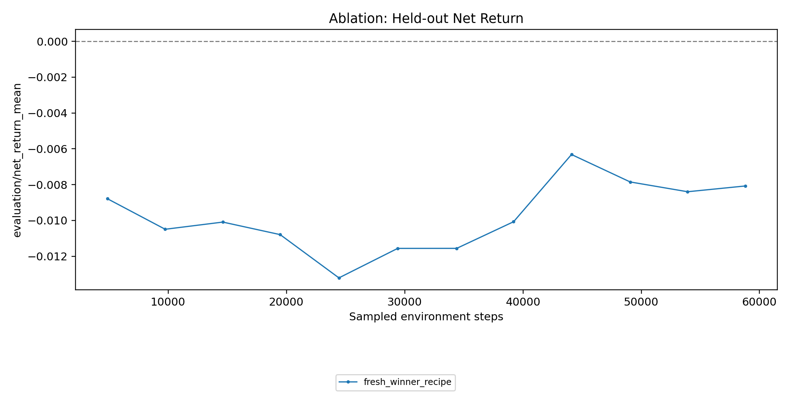
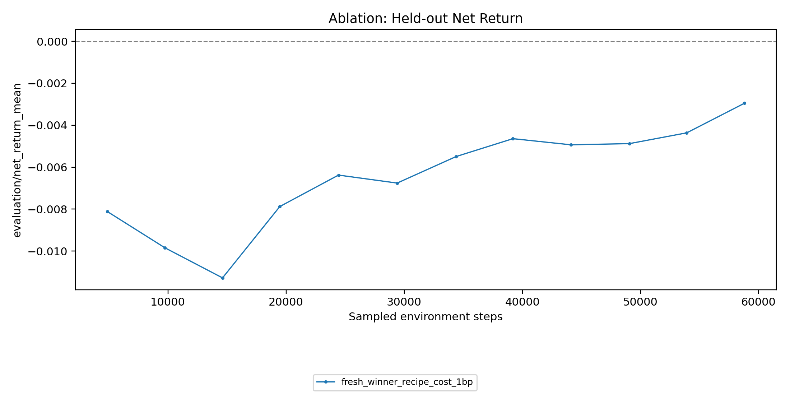
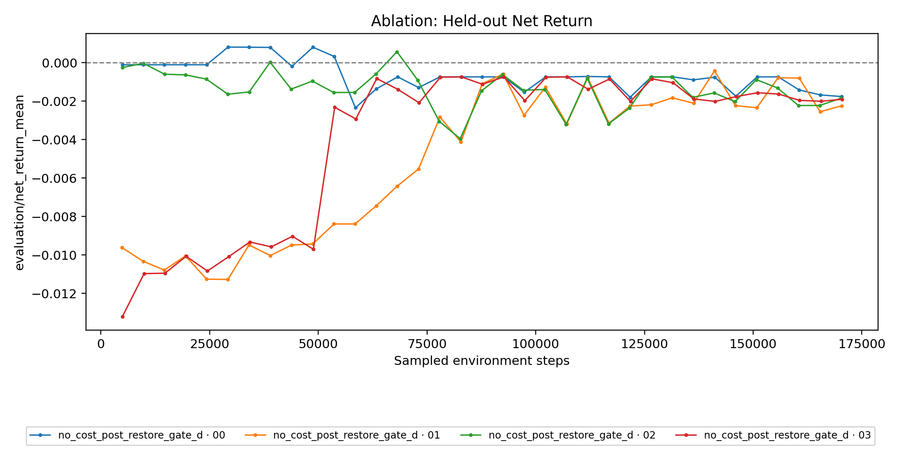
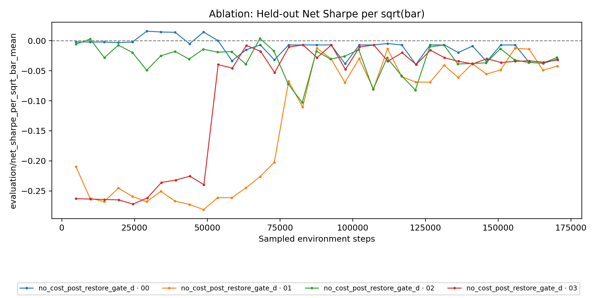
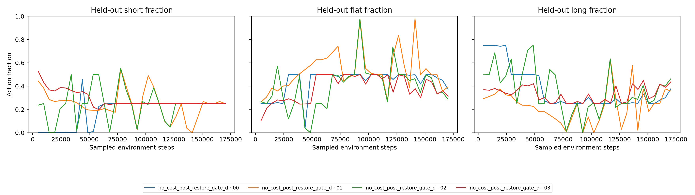
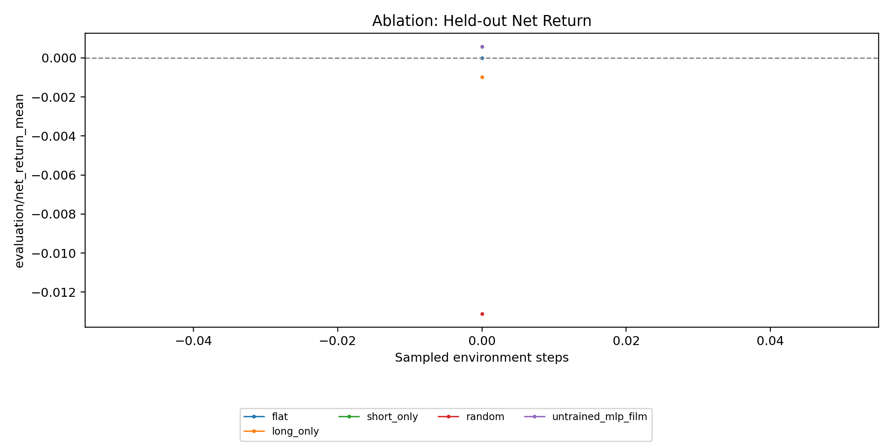
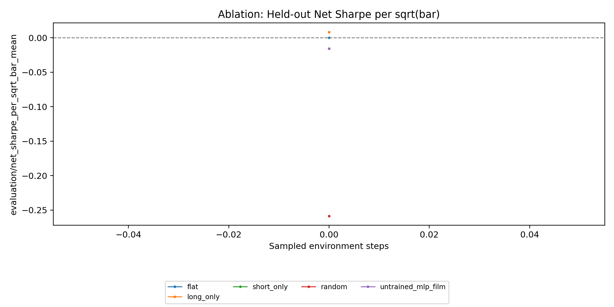
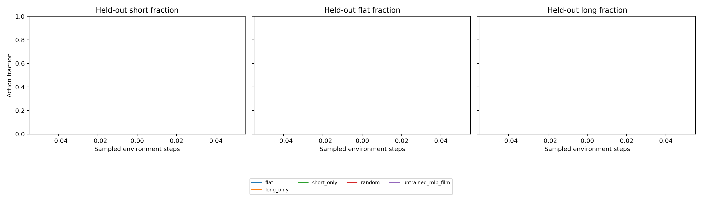

Dataset v2 + R0
A clean twelve-symbol OHLCV authority is live. PPO responds to the richer market surface, restore provenance is generation-bound, and the matched P0 is preflighted on a crossed development panel—but no dataset-v2 candidate has sustained economic edge.
Executive readout
Zero duplicate symbol/timestamp keys.
All sessions retained; RTH alone is selected.
Eight liquid stocks plus SPY, QQQ, IWM, and TLT.
Long-only net return at 1 bp.
Active policy, excessive switching costs.
Lower turnover, but 95.2% short.
From provider to solver
bars + calendar
gzip pages + request
session / symbol / year
filtered projection
RTH episode slices
The provider adapter is read-only acquisition infrastructure. It does not own brokerage, orders, risk, or execution. Any future Alpaca broker integration remains behind the deterministic Phase C RiskEngine/Executor boundary.
Per-symbol/year completion markers make interrupted acquisition resumable without accepting a partial Parquet unit: incomplete files are rebuilt before the immutable manifest is sealed.
Dataset-v1 diagnosis
Audited v1 closes matched Alpaca SIP after timestamp correction.
Every sampled v1 row repeated close into open/high/low.
- Volume often appeared at exact 1×, 2×, or 3× multiples of SIP, consistent with repeated inserts later aggregated by sum.
- Summer timestamps required a one-hour correction; winter timestamps did not, demonstrating naive local-time conversion across DST.
- PPO learned from a real but impoverished close series plus a noisy volume channel. That is learning evidence, not annualized performance evidence.
Immutable snapshot contract
| Dataset ID | dataset_v2_20220103_20260922_alpaca_sip_split |
|---|---|
| Provider / feed | Alpaca / SIP |
| Period | 2022-01-03 through 2026-09-22 |
| Symbols | AAPL, MSFT, AMZN, NVDA, AMD, AVGO, GOOGL, META, SPY, QQQ, IWM, TLT |
| Corporate actions | Split-adjusted prices; dividends not applied |
| Session counts | RTH 5,515,061 · pre 2,829,443 · after 2,025,560 |
| Raw pages retained | 1,067 |
| SHA-256 | fac41f6d42f8c5b1eac739755667bb38407461f82c168d7955de26bb2e5fb79c |
The snapshot ends at the last complete all-session date. At acquisition time, 23 September RTH had ended but its after-hours window had not. The retained calendar response includes that date, while the build request, bar partitions, and manifest correctly stop on 22 September.
Integrity results
| Check | Result |
|---|---|
| Unique keys / duplicate keys | 10,370,064 / 0 |
| OHLC invariant failures | 0 |
| Negative volume | 0 |
| Flat OHLC rows | 1,551,950 (14.97%) |
| RTH bars/day/symbol | min 203 · median 390 · max 390 · mean 388.17 |
| Trading dates/symbol | 1,184 |
RTH loading and resource shape
| Load | Rows | Init | Memory |
|---|---|---|---|
| Original trio, before filtering | 1,380,289 | 7.91 s | 742 MB |
| Original trio, after | 1,380,289 | 0.91 s | 432 MB |
| Full twelve-symbol RTH | 5,515,061 | 3.01 s | 1,210 MB |
The full RTH slice exposes 9,196 valid training ranges at a 200-bar horizon. It fits the validated Ray-2.9 topology: one rollout worker per trial, four declared Ray CPUs, and two concurrent trials on the 16 GB host.
Original 32-episode controls
| Policy | Gross | Net @ 1 bp | Sharpe / √bar | Turnover | Short / Flat / Long |
|---|---|---|---|---|---|
| Flat | 0.0000% | 0.0000% | 0.00000 | 0.00 | 0 / 100 / 0% |
| Long-only | +0.0797% | +0.0597% | +0.00757 | 2.00 | 0 / 0 / 100% |
| Short-only | −0.0797% | −0.0997% | −0.01649 | 2.00 | 100 / 0 / 0% |
| Random | +0.0315% | −1.2560% | −0.29842 | 128.75 | 33.5 / 33.6 / 33.0% |
| Untrained MLP-FiLM | −0.0275% | −0.1919% | −0.02812 | 16.44 | 72.6 / 25.0 / 2.4% |
Matched R0 bridge
Fresh weights, the same legacy winner recipe, identical seeds/starts/horizons/data, random/generated tasks, and 1 bp evaluation. Only optimization cost changes.
| Arm / point | Gross | Net | Sharpe / √bar | Turnover | Short / Flat / Long | KL | EV |
|---|---|---|---|---|---|---|---|
| No-cost, best net (u9) | +0.1443% | −0.6319% | −0.15048 | 77.63 | 32.6 / 28.5 / 38.9% | 0.00928 | 0.466 |
| No-cost, terminal (u12) | −0.0006% | −0.8075% | −0.17880 | 80.69 | 21.4 / 25.9 / 52.7% | 0.00851 | 0.360 |
| 1 bp, terminal/best (u12) | −0.1145% | −0.2951% | −0.05399 | 18.06 | 95.2 / 2.4 / 2.4% | 0.00940 | 0.509 |




Sharpe: what can and cannot be said
The invariant experiment metric is mean episode Sharpe per square-root bar. Under a simplistic iid, continuously invested RTH assumption, annualization would multiply by sqrt(390 × 252) ≈ 313.5; annualized Sharpe 1 would map to about 0.00319 per square-root bar.
That conversion is not valid for an overlapping, selected multi-symbol episode panel. Bars, starts, symbols, and regimes are correlated and the policy is not continuously deployed. Historical per-bar values around 0.02–0.03 are encouraging panel signals, not proof of annualized Sharpe above 1. Dataset v2 makes a future annualized calculation defensible; it does not retroactively annualize v1.
Gate D · synchronous PBT closure
A forensic pass also matched all five retained restore copies to their selected donor full-tree hashes. New arms use a stricter chain: scheduler selection → exactly one target restore receipt with the same digest → same-generation target report → same-generation retained checkpoint. Gate D predates restore generations and is accepted only through explicit legacy inspection.
| Member | Best step | Best net @ 1 bp | Best Sharpe / √bar | Positive net + Sharpe rows | Terminal net | Terminal Sharpe |
|---|---|---|---|---|---|---|
00000 | 29,232 | +0.08116% | +0.01576 | 5 | −0.17602% | −0.03071 |
00001 | 141,112 | −0.04265% | −0.03835 | 0 | −0.22433% | −0.04221 |
00002 | 68,080 | +0.05681% | +0.00369 | 1 | −0.18540% | −0.02802 |
00003 | 82,936 | −0.07390% | −0.00715 | 0 | −0.19078% | −0.03199 |
Member 00000 produced the useful transient: three consecutive positive-net/positive-Sharpe reports and four observations above matched long-only return, with a near long/flat split and turnover 1.25 at its best point. It later regressed. No Gate D checkpoint is promoted, and this one no-cost gate is not the matched reward/cost comparison.



Crossed development panel
The original panel assigned different starts to different horizons while semantic_v2 exposes horizon. The canonical P0 now crosses eight explicit RTH anchors with horizons 96, 128, 160, and 200. This removes the horizon/start identity shortcut while preserving 32 tasks. The anchors are selection-informed, so this remains a development panel—not an independent or final test.
| Policy | Net @ 1 bp | Sharpe / √bar | Turnover | Short / Flat / Long |
|---|---|---|---|---|
| Flat | 0.00000% | 0.00000 | 0.00 | 0 / 100 / 0% |
| Long-only | −0.09785% | +0.00827 | 2.00 | 0 / 0 / 100% |
| Short-only | +0.05785% | −0.01558 | 2.00 | 100 / 0 / 0% |
| Random | −1.31143% | −0.25857 | 128.75 | 33.5 / 33.6 / 33.0% |
| Untrained MLP-FiLM | +0.05785% | −0.01558 | 2.00 | 100 / 0 / 0% |



stream_worker loadout is frozen with random/generated family-00 tasks, narrower learning rates, bounded entropy schedules, and matched no-cost/staged/exact-cost arms. No arm is running; the goal is paused immediately before --variant no_cost.Why the earlier edge was transient
The historical +0.39258% R0 checkpoint used one dominant action for more than 95% of steps in 29/32 episodes: short at horizons 96/128/160 and long at horizon 200. Gate D member 00000 had the same family resemblance, with most positive return supplied by the 200-bar group. Meanwhile entropy stayed at 99.2–99.6% of the three-action maximum and explained variance remained near zero. Small logit shifts could therefore flip an entire horizon group under deterministic argmax evaluation.
The best Gate D point occurred before its first exploit, ruling out checkpoint restoration as the origin of the transient. The crossed panel is the immediate discriminator. R0 also lacks current position and previous action, making a transaction-cost objective partially observable and favoring static direction or flat shortcuts. If the crossed search remains horizon-static, preserve R0 as the compatibility baseline and run named market-only, horizon/task-only, and matched explicit-state diagnostics before blaming recurrence.
Gate and next run
Run one arm at a time from the canonical three-arm JSON with run_ablation --variant <id>. At 20 updates (roughly 96k sampled steps), continue only when all four members are healthy, at least two genuine exploits have exact donor receipts and fresh post-restore reports, required evidence is finite and non-empty, and C retains at least 20 GB free. Otherwise stop before consuming another arm's budget. The read-only inspect_pbt_gate command evaluates this contract as pass, stop, or pending; it never authorizes the next arm automatically.
- Use the explicit crossed panel for this P0 and predeclare new, non-overlapping chronological blocks for P1.
- Run matched synchronous PBT over no cost, staged 0 → 0.25 → 0.5 → 1 bp, and exact 1 bp on the environment-step clock.
- Search lower learning rates and bounded entropy schedules jointly with cost schedule; keep architecture, family 00, tasks, and panel fixed.
- Retain every evaluation improvement and replay 0.5/1/2 bp with return, Sharpe, drawdown, turnover, action, horizon, symbol, and regime blocks.
- Promote only after positive net and Sharpe, aggregate uplift over flat and the strongest matched directional control, paired block evidence, exact replay, 2 bp survival, and independent-seed replication.
Sharpe / sqrt(bar) ≥ 0.02 and a +0.005 margin over the directional control remain high-signal challenger thresholds—not annualized claims and not substitutes for block/replay gates.
Roadmap
Real close path; invalid full-OHLCV/provenance baseline.
Immutable SIP snapshot, RTH contract, original and crossed deterministic baselines.
Gate D forensic closure plus generation-bound receipts for new arms.
Resume with no cost; never chain staged or exact 1 bp automatically.
Correctness work may proceed without claiming economic uplift.
Net, Sharpe, controls, blocks, costs, replay, and seed replication.
Qwen3.8 vs random/generated at equal R0 checkpoint/compute; families 01/02 named separately.
Explicit cashflows and session regimes; no silent semantic changes.
Open only after selection is complete.
Dividend and session boundary
Prices are split-adjusted and not dividend-adjusted. Dividends later enter as explicit signed cashflows with ex-date ownership, long/short sign, and replay tests. Pre-market and after-hours are retained because they are costly to reconstruct, but Phase A remains RTH-only so liquidity, spread, volatility, execution, and annualization regimes are not silently mixed.
Evidence
- Dataset manifest and build request
- Quality summary and fixed controls
- Crossed-panel analysis, comparison CSV, and per-policy episode receipts
- No-cost report rows and 1 bp report rows
- Gate D manifest, terminal status, PBT events, and member ledgers with the
gate_d_prefix - Matched P0 preflight with exact hashes, arm loadout, validation results, and continuation stops
- Markdown source of truth
Licensed raw/Parquet bars and API credentials remain ignored. The repository stores reproducibility metadata, configs, aggregate metrics, plots, and tests.